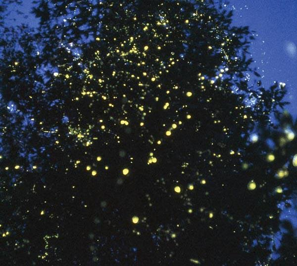
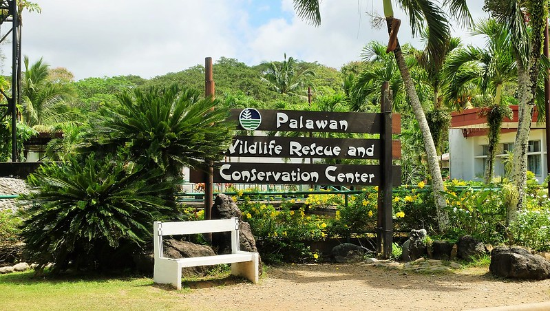
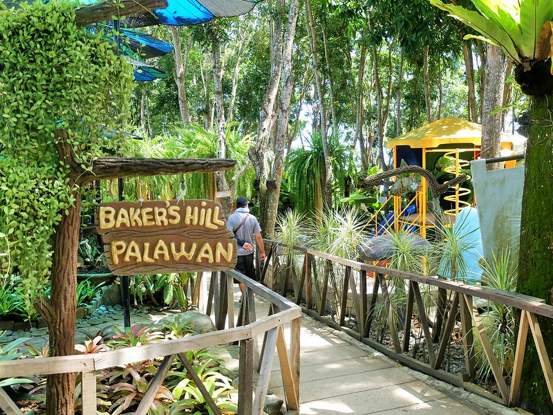

Top Scenic Locations
Discover some hidden gems and iconic spots in Puerto Princesa.
1. Ugong Rock Adventures
An exciting adventure destination with zip-lining, spelunking, and stunning views.

2. Iwahig Firefly Watching
A magical experience of observing fireflies by the river, offering serenity and wonder.
3. Plaza Cuartel
A historical site where you can learn about World War II history. It was once a Spanish garrison and later a site of wartime tragedy.

4. Palawan Wildlife Rescue and Conservation Center (Crocodile Farm)
Home to crocodile conservation efforts, with opportunities to see both baby and adult crocodiles. There’s also a mini-zoo with other native animals.
5. Baker's Hill
A unique attraction featuring a landscaped park, bakery, and fun sculptures. It’s a great spot for photos, delicious pastries, and local delicacies like hopia.
